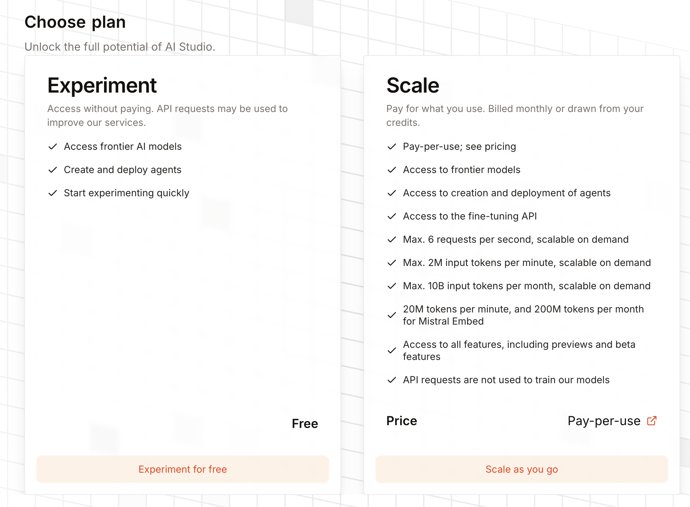

LangChain4j-CDI
Natively injectable generative AI in Jakarta EE — Build production-ready AI agents with CDI, MicroProfile and LangChain4j on OpenLiberty.

What you are going to build?
In this hands-on workshop, you will progressively build five AI-powered applications using LangChain4j-CDI, transforming Jakarta EE interfaces into injectable AI agents with a single annotation.
Exercise 1 : AI Agent
Create an injectable Viking skald with @RegisterAIService, streaming responses, and multimodal vision.
Exercise 2 : Resiliency and Observability
Add MicroProfile Fault Tolerance (@Retry, @Timeout, @CircuitBreaker) and OpenTelemetry.
Exercise 3 : MCP Integration
Connect your AI agent to external tools via the Model Context Protocol (MCP) &mdash "JDBC for AI".
Exercise 4 : Guardrails
Add safeguards for the entry and exit of your Viking skald: English language required and no fantasy races.
Exercise 5 : A2A Protocol
Orchestrate multiple AI agents via the Agent-to-Agent protocol: a writer, a scorer, and an orchestrator with a revision loop.
Each exercise has a base/ module (skeleton with TODOs) and a solution/ module (complete reference). Work in the base/ module and follow the steps. If you get stuck, the solution/ module is always there as a safety net.
Prerequisites
Required software
| Tool | Version | Utility |
|---|---|---|
| JDK | 21+ | Java development |
| Maven | 3.9+ | Build tool |
| IDE | Eclipse IDE / Apache NetBeans / IntelliJ IDEA / VS Code | Code editor |
| curl | any | API testing |
| Mistral AI API Key or Ollama | — | LLM provider — remote (Mistral AI, free) or local (Ollama) |
| Docker / Podman | any | Grafana LGTM stack (Exercise 2 only) |
1. Retrieve the source code
git clone https://github.com/TheEliteGentleman/langchain4j-cdi-lab-jcon-slovenia-2026.git
cd langchain4j-cdi-lab-jcon-slovenia-2026/demoes2. Choose your LLM provider
Option A — Mistral AI (remote): sign up for free on console.mistral.ai To obtain an API key. No local installation required.
Option B — Ollama (local): install Ollama, then download the model:
# In the first terminal (let it run):
ollama serve
# In the second terminal:
ollama pull ministral-3:3b # exercises 1, 2, 3, 4
ollama pull qwen2.5:7b # exercise 5 (A2A — always required)Ollama must remain active on http://localhost:11434 throughout the workshop.
Each module contains a microprofile-config.properties file structured as follows:
# ---- Option A : Mistral AI (remote) ----
dev.langchain4j.cdi.plugin.my-model.class=...MistralAiChatModel
dev.langchain4j.cdi.plugin.my-model.config.api-key=${MISTRAL_API_KEY}
dev.langchain4j.cdi.plugin.my-model.config.model-name=mistral-small-latest
# ---- Option B : Ollama (local) ----
# dev.langchain4j.cdi.plugin.my-model.class=...OllamaChatModel
# dev.langchain4j.cdi.plugin.my-model.config.base-url=http://localhost:11434
# dev.langchain4j.cdi.plugin.my-model.config.model-name=ministral-3:3b
dev.langchain4j.cdi.plugin.my-model.config.temperature=0.9
dev.langchain4j.cdi.plugin.my-model.config.log-requests=trueBy default, Option A (Mistral AI) is active. To switch to Ollama:
- Comment on the 3 lines of Option A (add
#in front) - Uncomment the 3 lines of Option B (remove the
#)
The common properties (temperature, log-requests, etc.) are listed below and remain unchanged – they apply regardless of the chosen provider.
Option A: Configure Mistral AI (remote)
Sign up at console.mistral.ai and follow these steps to get a free API key:
Step 1: Accessing API Keys
From the Mistral AI Studio homepage, click your profile icon (top right corner), then select API Keys.

Step 2: Choose a plan
On the API Keys page, you will see a warning: "No plan is currently active on this organization, the API keys will not be active." Click Choose a plan to activate your keys.

Without an active plan, your API keys will be created but will not work. You will get an "Unauthorized" error when calling the API.
Step 3: Select the free "Experiment" plan
Choose the Experiment plan (left side)— it's completely free and gives you access to all the cutting-edge AI models. Click on "Experiment for free".

Step 4: Accept the terms and subscribe
Check the box to accept the terms of use and privacy policy, then click Subscribe.

You will then be asked to provide your phone number to receive an activation code via SMS. This is required to activate the free Experiment plan.
Step 5: Create and Export Your API Key
Once your plan is activated, return to the API Keys page and click on "Create new key". Copy the key immediately &mbdash; you will not be able to view it again.

Then export it in your terminal:
# Linux / macOS
export MISTRAL_API_KEY=your-api-key-here
# Windows (PowerShell)
$env:MISTRAL_API_KEY="your-api-key-here"
# Windows (cmd)
set MISTRAL_API_KEY="your-api-key-here"If you have chosen Ollama, skip the entire Mistral AI section above. No API key is required — simply comment/uncomment the blocks in microprofile-config.properties as explained above.
3. OpenLiberty (automatic)
OpenLiberty is automatically downloaded and provisioned by the Maven plugin. No manual installation is required:
# Compile and deploy the application with OpenLiberty.
cd demo-1-ai-agent/solution
mvnw clean install
# Start the server
mvnw liberty:dev -e
3b. Configure the LLM Provider in the Solution
Before verifying your installation, ensure that the file demo-1-ai-agent/solution/src/main/resources/META-INF/microprofile-config.properties is configured for your provider:
- Option A — Mistral AI (Remote): This is the default configuration. Simply verify that the
MISTRAL_API_KEYvariable is properly exported in your terminal. - Option B — Ollama (Local): For each block (my-model, my-streaming-model, vision-model), comment out the 3 lines from Option A and uncomment the 3 lines from Option B.
# Example for my-model — Option B: Ollama
# (comment out the 3 Mistral AI lines above, then uncomment these)
dev.langchain4j.cdi.plugin.my-model.class=dev.langchain4j.model.ollama.OllamaChatModel
dev.langchain4j.cdi.plugin.my-model.config.base-url=http://localhost:11434
dev.langchain4j.cdi.plugin.my-model.config.model-name=ministral-3:3bThe file contains 3 models (my-model, my-streaming-model, vision-model). Remember to switch all three if you are using Ollama.
4. Verify Your Installation
# Compile all modules to download dependencies
cd demoes
mvnw clean install -DskipTests
# Quick Verification Test
cd demo-1-ai-agent/solution
mvnw clean install
mvnw liberty:dev -e #Running
# In another terminal:
curl -X POST -H "Content-Type: text/plain" \
-d "Sing me a heroic song" \
http://localhost:9080/api/chatYou can also test it directly in your browser by opening http://localhost:9080/ — the web interface allows you to chat with the Viking skald.
If you receive a response from the Viking Skald AI (via curl or via the browser), your environment is correctly configured. Stop the server (Ctrl+C) and proceed to the exercises.
Architecture Overview
LangChain4j-CDI is a CDI extension that bridges the gap between LangChain4j (the Java AI framework) and Jakarta EE / MicroProfile servers. It transforms annotated interfaces into injectable AI agents.
How It Works
The CDI extension scans @RegisterAIService interfaces at startup.
For each LangChain4j component interface: chatModelName, tools, chatMemoryProviderName, contentRetrieverName
A LangChain4j proxy is wrapped in a managed CDI bean.
The LLMConfig SPI reads from MicroProfile Config: dev.langchain4j.cdi.plugin.<name>.class=...
@Inject Assistant assistant; — it just works.
Before & After
Without CDI (Verbose)
ChatModel model =
MistralAiChatModel.builder()
.apiKey(System.getenv("MISTRAL_API_KEY"))
.modelName("pixtral-large-latest")
.temperature(0.3)
.maxTokens(1000)
.build();
ChatMemory memory =
MessageWindowChatMemory.builder()
.maxMessages(20).build();
Assistant assistant =
AiServices.builder(Assistant.class)
.chatLanguageModel(model)
.chatMemory(memory)
.tools(new VikingTools())
.build();With CDI (proper)
@RegisterAIService(
chatModelName = "my-model",
tools = VikingTools.class)
public interface Assistant {
@SystemMessage("You are a
Viking expedition guide")
String chat(
@UserMessage String message);
}
// In your REST endpoint:
@Inject
Assistant assistant;LangChain4j-CDI vs Spring AI
If you come from the Spring world, you may be familiar with Spring AI. Both frameworks offer similar capabilities — here is how they compare in terms of API style:
Spring AI is excellent within its ecosystem. LangChain4j-CDI does the same job using the Jakarta EE idiom: declarative, injectable, portable.
☘ Spring AI / Spring Boot 3.x
// Configuration bean
@Configuration
public class AssistantConfig {
@Bean
ChatClient chatClient(
ChatClient.Builder b,
VectorStore vs,
ChatMemory mem) {
return b
.defaultSystem("You are helpful")
.defaultAdvisors(
new QuestionAnswerAdvisor(vs),
new MessageChatMemoryAdvisor(mem))
.defaultTools(new WeatherTools())
.build();
}
}
// Service that uses it
@Service
public class AssistantService {
private final ChatClient client;
String chat(String user, String msg) {
return client.prompt().user(msg)
.advisors(a -> a.param(CONV_ID, user))
.call().content();
}
}~25 lines · 2 classes · 1 builder chain
◆ LangChain4j-CDI / Jakarta EE
// That's it. One interface.
@RegisterAIService(
chatMemoryProviderSupplier
= MemoryProvider.class,
tools = WeatherTools.class,
retrievalAugmentor = RagAugmentor.class)
public interface Assistant {
@SystemMessage("You are helpful")
String chat(
@MemoryId String user,
@UserMessage String msg);
}
// Inject anywhere. Done.
@Inject
Assistant assistant;
assistant.chat("Hell, Buhake!");~10 Lines · 1 Interface · 0 Mount
Both approaches are valid. The difference: with LangChain4j-CDI, there is no configuration code to write. CDI discovers the interface, creates the synthetic bean, and resolves dependencies — all via convention over configuration.
Dual CDI Extension Support
LangChain4j-CDI provides both types of extensions, so it works on any CDI server:
| Eextension type | Use | Servers |
|---|---|---|
| Portable Extension | Runtime | WildFly, Payara, GlassFish, Liberty |
| Build Compatible Extension | Compile-time | Quarkus, Helidon |
Project Structure
├── pom.xml ← Parent POM (centralized versions)
├── demo-1-ai-agent/ ← Injectable AI Agent
│ ├── base/ ← Skeleton with TODOs (your workspace)
│ └── solution/ ← Complete reference
├── demo-2-ft-telemetry/ ← Memory + RAG + Tools + FT + Telemetry
│ ├── base/
│ └── solution/
├── demo-3-mcp/ ← MCP Integration
│ ├── mcp-server/ ← MCP standalone server
│ ├── base/
│ └── solution/
└── demo-4-guardrails/ ← Input & Output Guardrails
├── base/ ← Skeleton with TODOs (Your Workspace)
└── solution/
Introductory Slides
Presentation of the context, speakers, and workshop agenda.
In the presentation: → next slide · S notes · O overview · Esc exit full screen
Exercise 1: Injectable AI Agent
Key Message: "From 15 lines of boilerplate code to 1 annotation + 1 configuration property"
Create a simple AI chatbot using @RegisterAIService, inject it into a Jakarta REST (formerly JAX-RS) endpoint, and test it. Then, add streaming and multimodal vision capabilities.
cd demoes/demo-1-ai-agent/base
# Open this directory in your IDEKey Files
| File | Purpose |
|---|---|
ChatAssistant.java | AI service interface (your main task) |
ChatAssistantStreaming.java | AI streaming service |
ChatResource.java | JAX-RS REST Access Point |
ImageAnalyzerServlet.java | Multimodal vision servlet |
microprofile-config.properties | LLM Configuration |
Open ChatAssistant.java. It is a simple Java interface with two TODOs. Your task: transform it into an injectable AI agent.
TODO 1 — Uncomment the import
import dev.langchain4j.cdi.spi.RegisterAIService;TODO 2 — Add @RegisterAIService to the interface
@SuppressWarnings("CdiManagedBeanInconsistencyInspection")
@RegisterAIService(chatModelName = "my-model")
public interface ChatAssistant {
@SystemMessage("""
You are a Viking skald who tells jokes and funny stories in the great hall.
Your jokes center on clumsy warriors, raids gone awry,
overly boozy feasts, and the Norse gods and their antics.
Your jokes are short, punchy, and make everyone laugh.
You can also share humorous anecdotes about Viking life.
""")
String chat(@UserMessage String userMessage);
}@RegisterAIServiceinstructs the CDI extension to create an injectable bean for this interfacechatModelName = "my-model"refers to the model configuration inmicroprofile-config.properties@SystemMessagedefines the AI's personality and behavior@UserMessagemarks the parameter as user input
Open ChatResource.java. It contains a @PostConstruct init() method that manually instantiates the models and AI services — which is exactly what CDI replaces. Your task: remove this boilerplate and replace it with injection.
TODO 1 — Remove the 4 unnecessary imports at the top of the file
// Remove these 4 imports:
import dev.langchain4j.model.mistralai.MistralAiChatModel;
import dev.langchain4j.model.mistralai.MistralAiStreamingChatModel;
import dev.langchain4j.service.AiServices;
import jakarta.annotation.PostConstruct;TODO 2 — Uncomment the CDI import and replace the fields + @PostConstruct
import jakarta.inject.Inject;
@Path("/chat")
@ApplicationScoped
public class ChatResource {
@Inject
ChatAssistant assistant;
@Inject
ChatAssistantStreaming streamingAssistant;
// Delete the entire @PostConstruct init() method below
@POST
@Consumes(MediaType.TEXT_PLAIN)
@Produces(MediaType.TEXT_PLAIN)
public String chat(String message) {
return assistant.chat(message);
}
// The /stream endpoint is already implemented; nothing needs to be modified here.
}The business logic has no dependency on LangChain4j. The only import is your own interface. Want to switch AI frameworks tomorrow? Change the implementation, not the business logic.
Open src/main/resources/META-INF/microprofile-config.properties. The configuration is already ready — simply verify that the correct provider is active.
By default, Option A (Mistral AI) is already uncommented:
# ---- Option A : Mistral AI (remote) ---- [ACTIVE BY DEFAULT]
dev.langchain4j.cdi.plugin.my-model.class=dev.langchain4j.model.mistralai.MistralAiChatModel
dev.langchain4j.cdi.plugin.my-model.config.api-key=${MISTRAL_API_KEY}
dev.langchain4j.cdi.plugin.my-model.config.model-name=mistral-small-latest
# ---- Option B : Ollama (local) ---- [Commented out by default]
#dev.langchain4j.cdi.plugin.my-model.class=dev.langchain4j.model.ollama.OllamaChatModel
#dev.langchain4j.cdi.plugin.my-model.config.base-url=http://localhost:11434
#dev.langchain4j.cdi.plugin.my-model.config.model-name=ministral-3:3b
dev.langchain4j.cdi.plugin.my-model.config.temperature=0.9
dev.langchain4j.cdi.plugin.my-model.config.log-requests=trueIn microprofile-config.properties, comment out the 3 lines for Option A and uncomment the 3 lines for Option B. The common properties (temperature, log-requests...) remain unchanged.
The builder properties must use the .config. prefix: dev.langchain4j.cdi.plugin.<name>.config.<prop>=value. Without .config., the property is silently ignored.
Compile and Run
mvnw clean install
mvnw liberty:dev -e# In another terminal:
curl -X POST -H "Content-Type: text/plain" \
-d "Tell me a Viking joke!" \
http://localhost:9080/api/chatOpen ChatAssistantStreaming.java. As with ChatAssistant, it has two TODOs:
TODO 1 — Uncomment the import
import dev.langchain4j.cdi.spi.RegisterAIService;TODO 2 — Add @RegisterAIService to the interface.
@SuppressWarnings("CdiManagedBeanInconsistencyInspection")
@RegisterAIService(streamingChatModelName = "my-streaming-model")
public interface ChatAssistantStreaming {
@SystemMessage("""
You are a Viking skald—a storyteller and poet of the great hall.
You sing epic tales of glorious battles, daring raids,
the bravery of warriors, voyages aboard longships, and the road to Valhalla.
Your songs are rhythmic, heroic, and filled with honour.
""")
TokenStream chatStream(@UserMessage String userMessage);
}In ChatResource.java, the GET /stream endpoint is already implemented. It will be functional as soon as the streamingAssistant injection is in place (Step 2). Nothing else needs to be modified here.
The streaming model configuration is also already present in microprofile-config.properties — verify that the correct provider is active (Option A or B):
# ---- Option A : Mistral AI (remote) ---- [ACTIVE BY DEFAULT]
dev.langchain4j.cdi.plugin.my-streaming-model.class=dev.langchain4j.model.mistralai.MistralAiStreamingChatModel
dev.langchain4j.cdi.plugin.my-streaming-model.config.api-key=${MISTRAL_API_KEY}
dev.langchain4j.cdi.plugin.my-streaming-model.config.model-name=mistral-small-latest
# ---- Option B : Ollama (local) ----
#dev.langchain4j.cdi.plugin.my-streaming-model.class=dev.langchain4j.model.ollama.OllamaStreamingChatModel
#dev.langchain4j.cdi.plugin.my-streaming-model.config.base-url=http://localhost:11434
#dev.langchain4j.cdi.plugin.my-streaming-model.config.model-name=ministral-3:3bComment out Option A of the streaming model and uncomment Option B in microprofile-config.properties.
Open ImageAnalyzerServlet.java and inject a vision model:
@WebServlet("/uploadServlet")
@MultipartConfig
public class ImageAnalyzerServlet extends HttpServlet {
@Inject
@Named("vision-model")
ChatModel visionModel;
@Override
protected void doPost(HttpServletRequest request,
HttpServletResponse response) throws ... {
Part file = request.getPart("file");
UserMessage userMessage = UserMessage.from(
TextContent.from("Describe this image in detail."),
ImageContent.from(encodeBase64(file.getInputStream()),
file.getContentType())
);
ChatResponse answer = visionModel.chat(userMessage);
response.getWriter().write(answer.aiMessage().text());
}
}And the vision model configuration:
dev.langchain4j.cdi.plugin.vision-model.class=\
dev.langchain4j.model.mistralai.MistralAiChatModel
dev.langchain4j.cdi.plugin.vision-model.config.api-key=${MISTRAL_API_KEY}
dev.langchain4j.cdi.plugin.vision-model.config.model-name=pixtral-large-latestSame principle: comment out Option A of the vision model and uncomment Option B. The already downloaded Ollama model (ministral-3:3b) will be used.
# Chat standard
curl -X POST -H "Content-Type: text/plain" \
-d "Tell me a Viking joke!" \
http://localhost:9080/api/chat
# Streaming (Open in browser)
# http://localhost:9080/stream.html
# Image Analysis (Open in browser)
# http://localhost:9080/image.html
# Health Check
curl http://localhost:9080/api/chat/health- The standard chat returns a response from the Viking skald.
- Streaming displays tokens arriving in real time.
- Image upload returns an AI-generated description.
Switch to the solution: cd ../solution && mvnw clean install, then mvnw liberty:dev -e
Exercise 2: Fault Tolerance and Telemetry
Key Message: "MicroProfile annotations work on AI services because they are CDI beans."
Start with a functional Viking expeditions guide that already features caching, RAG, and tools. Your task: add MicroProfile Fault Tolerance annotations to make it production-ready, then observe it with OpenTelemetry.
Start by launching the Grafana LGTM stack (Loki + Grafana + Tempo + Mimir) in a dedicated terminal — it will be ready when you need it for telemetry:
# Start the full LGTM stack (Loki + Grafana + Tempo + Mimir)
# with the built-in OpenTelemetry Collector — leave running in the background
podman run -p 3000:3000 -p 4317:4317 -p 4318:4318 --rm -ti grafana/otel-lgtm
# Or with Docker
docker run -p 3000:3000 -p 4317:4317 -p 4318:4318 --rm -ti grafana/otel-lgtmThen launch the application in another terminal:
cd demoes/demo-2-ft-telemetry/base
mvnw clean install
mvnw liberty:dev -eOpen your browser to http://localhost:8080/demo-2 to test the application.
What already works
The base module comes pre-wired with the following features:
Conversational Memory
@MemoryId provides per-session memory via ChatMemoryProviderBean. Each browser tab gets its own conversation.
RAG
ExpeditionDetailsProvider ingests Viking expedition data into an in-memory vector store using Mistral embeddings.
Tools
VikingTools is a CDI bean with 5 @Tool methods: list expeditions, enrol warrior, cancel, check availability, view enrolments.
Test that everything works before adding fault tolerance:
curl -X POST -H "Content-Type: text/plain" \
-H "X-Session-Id: test-123" \
-d "What expeditions are available?" \
http://localhost:8080/api/chatOpen ChatAssistant.java. The AI service interface already has @RegisterAIService with memory, RAG, and tools. Add the annotation
@Retry:
import org.eclipse.microprofile.faulttolerance.Retry;
@RegisterAIService(chatModelName = "my-model",
chatMemoryProviderName = "my-memory",
contentRetrieverName = "my-rag",
tools = VikingTools.class)
public interface ChatAssistant {
@Retry(maxRetries = 3, delay = 1000)
String chat(@MemoryId String sessionId,
@UserMessage String message);
}Since @RegisterAIService creates a CDI bean, all MicroProfile interceptors apply. The CDI container wraps the proxy with the Fault Tolerance interceptor — no binding code required.
Stack the Fault Tolerance annotations:
import org.eclipse.microprofile.faulttolerance.*;
import java.time.temporal.ChronoUnit;
@RegisterAIService(chatModelName = "my-model",
chatMemoryProviderName = "my-memory",
contentRetrieverName = "my-rag",
tools = VikingTools.class)
public interface ChatAssistant {
@Retry(maxRetries = 3, delay = 1000)
@Timeout(value = 30, unit = ChronoUnit.SECONDS)
@Fallback(fallbackMethod = "chatFallback")
String chat(@MemoryId String sessionId,
@UserMessage String message);
default String chatFallback(String sessionId, String message) {
return "I'm sorry, our AI service is temporarily unavailable. "
+ "Please try again in a moment. "
+ "Our team has been notified.";
}
}Add the final piece — the circuit breaker prevents overloading a failing service:
@Retry(maxRetries = 3, delay = 1000)
@Timeout(value = 30, unit = ChronoUnit.SECONDS)
@Fallback(fallbackMethod = "chatFallback")
@CircuitBreaker(requestVolumeThreshold = 5, failureRatio = 0.5)
String chat(@MemoryId String sessionId,
@UserMessage String message);Hot reloading: save and run mvn package (or let your IDE compile automatically).
Now that the annotations are in place, open pom.xml and uncomment the langchain4j-cdi-fault-tolerance dependency (the block marked TODO). Without it, the annotations are silently ignored.
<dependency>
<groupId>dev.langchain4j.cdi.mp</groupId>
<artifactId>langchain4j-cdi-fault-tolerance</artifactId>
</dependency>Simulate a failure: turn off the Wi-Fi to simulate a network issue, then send some requests. If you are using Ollama, simply shut down the server. You should see the retry attempts, followed by the fallback message. Restore the connection (or restart Ollama), and the circuit breaker will automatically reset.
La stack Grafana LGTM est déjà lancée depuis le début de l'exercice. La configuration de télémétrie est déjà dans microprofile-config.properties :
# OpenTelemetry
otel.exporter.otlp.endpoint=http://localhost:4318
otel.service.name=demo-2-langchain4j-cdi
otel.traces.exporter=otlp
otel.metrics.exporter=otlp
# LangChain4j-CDI Telemetry Listeners
dev.langchain4j.cdi.plugin.my-model.config.listeners=\
dev.langchain4j.cdi.telemetry.SpanChatModelListener,\
dev.langchain4j.cdi.telemetry.MetricsChatModelListenerSend a few chat requests, then open http://localhost:3000 (Grafana). Navigate to Explore → Tempo and search for the demo-2-langchain4j-cdi service.
You will see distributed traces showing:
- LLM call latency
- Token count (input/output)
- Tool calls and their duration
- RAG retrieval steps
# Chat with session
curl -X POST -H "Content-Type: text/plain" \
-H "X-Session-Id: test-456" \
-d "What expeditions are available?" \
http://localhost:9080/api/chat
# Enroll a Warrior
curl -X POST -H "Content-Type: text/plain" \
-H "X-Session-Id: test-456" \
-d "Enroll Erik Bloodaxe for the first expedition" \
http://localhost:9080/api/chat
# Inspect memory
curl "http://localhost:9080/api/chat/memory?sessionId=test-456"- Memory preserves context between messages within the same session
- RAG retrieves relevant information regarding expeditions
- Tools execute enrollments, cancellations, and queries
- The fallback responds gracefully when the AI is unavailable
- Traces appear in Grafana/Tempo
Exercise 3: MCP Integration
Key Message: "MCP is the JDBC of AI — your agents communicate with any tool server."
Connect an AI agent to an external MCP (Model Context Protocol) server. The MCP server provides rune-casting tools, and your AI agent hosts a game of Hnefatafl at the Grand Thing via the protocol.
What is MCP?
The Model Context Protocol is an open standard for connecting AI agents to external tools. Think of it as a universal adapter: a single protocol, any tool server, any language.
@RegisterAIService toolProviderName JSON-RPC via Streamable HTTP
First, compile and start the external dice MCP server:
# Compile and start the MCP server (listening on port 8090).
cd demoes/demo-3-mcp/mcp-server
mvnw clean package
mwnw liberty:dev -eThe MCP server is a MicroProfile application powered by LangChain4j-CDI MCP Server. It automatically exposes an /mcp endpoint that speaks the MCP protocol (JSON-RPC 2.0 over Streamable HTTP). The roll tool generates random dice results for the Viking game.
Leave the MCP server running in a separate terminal. The AI agent will connect to it via the MCP endpoint at localhost:8090/mcp.
Tester avec MCP Inspector
Avant de connecter le serveur MCP à l'agent IA, vous pouvez vérifier qu'il fonctionne en utilisant le MCP Inspector — un outil de débogage visuel pour les serveurs MCP. Dans un nouveau terminal :
# Launch MCP Inspector
npx @modelcontextprotocol/inspectorThis opens a web interface (usually at http://localhost:6274). Configure the connection:
- Transport Type :
Streamable HTTP - URL :
http://localhost:8090/mcp
Click on Connect, then on the Tools tab, and on the roll tool to inspect and test it interactively:

- The connection status displays Connected
- The
rolltool appears in the Tools list - Set
numberOfDiceto2, click Run Tool, and verify that you receive dice results
Open HnefataflJarlAI.java in demo-3-mcp/base/:
@RegisterAIService(chatModelName = "mistral",
toolProviderName = "mcp")
public interface HnefataflJarlAI {
@SystemMessage("""
You are Ragnar the Skald, the Jarl hosting Hnefatafl
at the Grand Thing of the Northern warriors.
RULES: Cast 2 rune stones with roll(numberOfDice=2).
OPENING CAST:
- 7 or 11: Odin's Favour -- warrior WINS!
- 2, 3 or 12: Curse of the Norns -- warrior LOSES!
- Other: that number becomes THE MARKED RUNE.
RUNE PHASE: hit the rune = WIN, roll 7 = Ragnarök = LOSE.
REQUIRED FORMAT:
RUNES: [X, Y]
TOTAL: [sum]
FATE: [what happened]
Respond in French.
""")
String play(@UserMessage String playerAction);
}toolProviderName = "mcp" connects this agent to the McpToolProvider bean, which automatically discovers Rune Launch tools from the external MCP server.
Open microprofile-config.properties and uncomment the MCP configuration:
# Chat Model
# ---- Option A : Mistral AI (distant) ----
dev.langchain4j.cdi.plugin.mistral.class=dev.langchain4j.model.mistralai.MistralAiChatModel
dev.langchain4j.cdi.plugin.mistral.config.api-key=${MISTRAL_API_KEY}
dev.langchain4j.cdi.plugin.mistral.config.model-name=mistral-small-latest
# MCP Transport (Streamable HTTP to the dice MCP server)
dev.langchain4j.cdi.plugin.ssetransport.class=\
dev.langchain4j.mcp.client.transport.http.StreamableHttpMcpTransport
dev.langchain4j.cdi.plugin.ssetransport.config.url=http://localhost:8090/mcp
dev.langchain4j.cdi.plugin.ssetransport.config.logRequests=true
dev.langchain4j.cdi.plugin.ssetransport.config.logResponses=true
# MCP Client
dev.langchain4j.cdi.plugin.mcpclient.class=dev.langchain4j.mcp.client.DefaultMcpClient
dev.langchain4j.cdi.plugin.mcpclient.config.transport=lookup:@ssetransport
# MCP Tool Provider (nommé "mcp" pour @RegisterAIService)
dev.langchain4j.cdi.plugin.mcp.class=dev.langchain4j.mcp.McpToolProvider
dev.langchain4j.cdi.plugin.mcp.config.mcpClients=lookup:@mcpclientSame principle: comment out Option A of the Chat Model and uncomment Option B. The MCP configuration (transport, client, tool provider) remains identical.
lookup:@ssetransport references another CDI bean by its configuration name. This is how you wire beans together solely via configuration — no Java code is needed for the plumbing.
Open GameResource.java :
@Path("/game")
@ApplicationScoped
public class GameResource {
@Inject
HnefataflJarlAI gameMaster;
@POST
@Path("/play")
@Consumes(MediaType.TEXT_PLAIN)
@Produces(MediaType.TEXT_PLAIN)
public String play(String playerAction) {
return gameMaster.play(playerAction);
}
@GET
@Path("/start")
@Produces(MediaType.TEXT_PLAIN)
public String start() {
return gameMaster.play(
"Hi! I'm ready for a game of Hnefatafl!");
}
}# Ensure that the MCP server is running on port 8090!
# Compile and Run
cd demoes/demo-3-mcp/base
mvnw clean install
mvnw liberty:dev -e
# Start a game
curl http://localhost:9080/api/game/start
# Roll the dice
curl -X POST -H "Content-Type: text/plain" \
-d "Cast the runes!" \
http://localhost:9080/api/game/play
# Open the web interface
# http://localhost:9080/- The AI agent calls the MCP server's
rolltool via Streamable HTTP. - The rune results are returned in the format RUNES: [X, Y].
- Ragnar the Skald announces victories, curses, and marked runes in Viking style.
- The web interface displays visual dice with animated pips.
You have built three AI-powered applications using LangChain4j-CDI: a Viking skald, a resilient expedition guide, and a Hnefatafl game integrated via MCP. All of this using standard Jakarta EE patterns.
Exercise 4: Guardrails — Guardrails for Your Agent
Key Message: "Guardrails are CDI beans — they benefit from dependency injection just like all your components."
Add four guardrails around your Viking skald: two on the input (validate the request before calling the LLM) and two on the output (validate the response before returning it). The agent accepts only English and rejects any mention of fantasy races.
cd demoes/demo-4-guardrails/base
# Open this directory in your IDE
Concept: InputGuardrail vs OutputGuardrail
InputGuardrail
Runs before calling the LLM. If the guardrail fails, the LLM is never called—saving time and tokens.
InputGuardrailResult validate(
UserMessage userMessage)
OutputGuardrail
Executes after the LLM's response. If the guardrail fails, an exception is raised — the calling code must handle it.
OutputGuardrailResult validate(
AiMessage responseFromLLM)
Key Files
File Role TODO SkaldAssistant.javaAI Service Interface Add @RegisterAIService with the guardrail names EnglishInputGuardrail.javaVerifies that the request is in English Name, initialize, implement EnglishOutputGuardrail.javaVerifies that the song is in English Name, initialize, implement NoFantasyRacesInputGuardrail.javaRejects mentions of dwarves/elves in the input Name, implement NoFantasyRacesOutputGuardrail.javaRejects mentions of dwarves/elves in the output Name, implement ChatResource.javaREST Endpoint (already wired) None — already handles guardrail exceptions
⚠ Prerequisites
This exercise uses Mistral AI (like Exercise 1). Ensure that MISTRAL_API_KEY is exported in your terminal.
@Named
Guardrails are CDI beans referenced by name in @RegisterAIService. Add @Named to each guardrail class.
EnglishInputGuardrail.java
import jakarta.inject.Named;
@ApplicationScoped
@Named("english-input") // ← Add this annotation
public class EnglishInputGuardrail implements InputGuardrail {
// ...
}EnglishOutputGuardrail.java
@ApplicationScoped
@Named("english-output")
public class EnglishOutputGuardrail implements OutputGuardrail {
// ...
}NoFantasyRacesInputGuardrail.java
@ApplicationScoped
@Named("fantasy-input")
public class NoFantasyRacesInputGuardrail implements InputGuardrail {
// ...
}NoFantasyRacesOutputGuardrail.java
@ApplicationScoped
@Named("fantasy-output")
public class NoFantasyRacesOutputGuardrail implements OutputGuardrail {
// ...
}LangChain4j-CDI resolves guardrails by their CDI name at startup. The name in @Named("...") must exactly match the strings in inputGuardrailNames and outputGuardrailNames.
The language guardrails (EnglishInputGuardrail and EnglishOutputGuardrail) use Apache Tika to automatically detect the language of a text. Initialize the detector in @PostConstruct:
import org.apache.tika.langdetect.optimaize.OptimaizeLangDetector;
import org.apache.tika.language.detect.LanguageDetector;
@ApplicationScoped
@Named("output-input")
public class EnglishInputGuardrail implements InputGuardrail {
private LanguageDetector detector;
@PostConstruct
void init() {
detector = new OptimaizeLangDetector().loadModels();
// ↑ Loads language detection models from the classpath.
}
// ...
}Do the same in EnglishOutputGuardrail.
The bean is @ApplicationScoped: a single instance shared across all requests. Apache Tika's LanguageDetector is not thread-safe — you will need to use synchronized (detector) { ... } during detection.
validate() method
EnglishInputGuardrail — Accept only English
@Override
public EnglishGuardrailResult validate(UserMessage userMessage) {
String text = userMessage.singleText();
LanguageResult result;
synchronized (detector) {
result = detector.detect(text);
}
// Benefit of the doubt : If Tika isn't sure (text too short), we'll let it go.
if (result.isReasonablyCertain() && !"en".equals(result.getLanguage())) {
return failure("Only English is accepted! Speak English to summon the skald.");
}
return success();
}EnglishOutputGuardrail — Verify that the song is in English.
@Override
public OutputGuardrailResult validate(AiMessage responseFromLLM) {
String text = responseFromLLM.text();
LanguageResult result;
synchronized (detector) {
result = detector.detect(text);
}
// When it comes to the output, we are strict: if it's not certain or not in English → failure.
if (!result.isReasonablyCertain() || !"en".equals(result.getLanguage())) {
return failure("The song must be in English! The skald must sing in the language of Molière.");
}
return success();
}For the entry: we apply the benefit of the doubt — a single word like "Odin" is not detectable with certainty, so we accept it. For the output: the chant is long, and Tika is reliable — we reject it if it is not certain or if it is not French.
NoFantasyRacesInputGuardrail — Reject forbidden words in the input
private static final Set<String> FORBIDDEN_WORDS =
Set.of("dwarf", "dwarves", "elf", "elves");
@Override
public InputGuardrailResult validate(UserMessage userMessage) {
String text = userMessage.singleText().toLowerCase();
for (String word : FORBIDDEN_WORDS) {
if (text.contains(word)) {
return failure("The Vikings know neither dwarves nor elves! "
+ "Keep your request purely Nordic.");
}
}
return success();
}NoFantasyRacesOutputGuardrail — Reject forbidden words in the output
@Override
public OutputGuardrailResult validate(AiMessage responseFromLLM) {
String text = responseFromLLM.text().toLowerCase();
for (String word : FORBIDDEN_WORDS) {
if (text.contains(word)) {
return failure("The skald's song must not evoke dwarves or elves!"
+ "It's a pure Viking saga.");
}
}
return success();
}@RegisterAIService
Open SkaldAssistant.javaand uncomment/replace the TODO with the complete annotation:
import dev.langchain4j.cdi.RegisterAIService;
import dev.langchain4j.service.SystemMessage;
import dev.langchain4j.service.UserMessage;
@RegisterAIService(
chatModelName = "my-model",
inputGuardrailNames = {"english-input", "fantasy-input"},
outputGuardrailNames = {"english-output", "fantasy-output"})
public interface SkaldAssistant {
@SystemMessage("""
You are a Viking skald who composes epic songs in ENGLISH.
The song must celebrate heroic Norse themes: battles, raids,
Valhalla, Thor, Odin, longships.
Format: 3-4 verses with a powerful chorus.
Tone: Epic, heroic, warlike.
""")
String composeSong(@UserMessage String request);
}Guardrails are executed in the order of the arrays. Here, english-input is evaluated before fantasy-input. If the first one fails, the second is not evaluated. The LLM is called only if all input guardrails pass.
Compile and Run
mvnw clean install
mvnw liberty:dev -eThe microprofile-config.properties file is already configured with the Mistral AI model. Ensure that MISTRAL_API_KEY is set in your environment.
Via curl
# ✅ Valid request in English
curl -X POST -H "Content-Type: text/plain" \
-d "Compose a song about the glory of Odin and Viking battles." \
http://localhost:9080/api/song
# ❌ InputGuardrail Language: French query rejected.
curl -X POST -H "Content-Type: text/plain" \
-d "Chante-moi une chanson viking héroïque sur Odin" \
http://localhost:9080/api/song
# ❌ Input Guardrail Races: Mention of dwarves rejected
curl -X POST -H "Content-Type: text/plain" \
-d "Compose a song about the dwarves who forged Viking weapons." \
http://localhost:9080/api/song
# Health Check
curl http://localhost:9080/api/song/healthVia the web interface
Open http://localhost:9080/ to access the interactive interface that displays active guardrails and their error messages.
- An English query on a Nordic theme produces an epic chant.
- A French query returns: "Only English is accepted!"
- A query mentioning dwarves or elves is rejected.
- A single ambiguous word — such as "Odin" — is allowed (given the benefit of the doubt).
- HTTP status code 400 is returned, along with the message from the failed guardrail.
Switch to the solution: cd ../solution && mvnw clean install then mvnw liberty:dev -e
You have built four AI-powered applications using LangChain4j-CDI. Move on to Exercise 5 to discover multi-agent orchestration with the A2A protocol!
Exercise 5 : A2A — Orchestration multi-agents
Key message: "MCP connects agents to tools. A2A connects agents to one another — microservices, AI-style."
Build three independent WildFly services communicating via the A2A (Agent-to-Agent) protocol: a Creative Writer that generates stories, a Style Scorer that evaluates the style, and an Orchestrator that coordinates the entire process with an automated review loop.
cd demoes/demo-5-a2a/base
# Open this directory in your IDEConcept: MCP vs. A2A
MCP (Model Context Protocol)
An agent calls external tools (databases, APIs, files). Agent → Tool communication.
Agent → MCP Server → ToolA2A (Agent-to-Agent)
An agent delegates to other specialized agents, each on their own server. Agent-to-agent communication.
Orchestrator ↔ Agent A2A ↔ Agent A2AStory Forge Architecture
The Story Forge application orchestrates three services:
- Creative Writer (port 8080) — Crafts a short Norse saga based on a given topic
- Style Scorer (port 8081) — Evaluates the saga's adherence to a specific style (score 0.0–1.0)
- Orchestrator (port 8082) — Coordinates the pipeline: writing → loop (scorer + local editor) until score ≥ 0.8
Key Files
a2a-creative-writer
| File | Role | TODO |
|---|---|---|
CreativeWriter.java | LangChain4j AI Service | Add @RegisterAIService and @UserMessage |
CreativeWriterAgentCardProducer.java | Describes the agent to the A2A network | Build the AgentCard |
CreativeWriterExecutorProducer.java | Receives and processes A2A requests | Implement execute() |
a2a-style-scorer
| File | Role | TODO |
|---|---|---|
StyleScorer.java | LangChain4j AI Service | Add @RegisterAIService and @UserMessage |
StyleScorerAgentCardProducer.java | Describes the agent to the A2A network | Build the AgentCard |
StyleScorerExecutorProducer.java | Receives and processes A2A requests | Implement execute() |
a2a-orchestrator
| File | Role | TODO |
|---|---|---|
Agents.java | Pipeline Agent Interfaces | Add @Agent, @UserMessage, AgenticScopeAccess |
OrchestratorService.java | Wire the agentic pipeline | Create the builders a2a, loop, sequence |
StyledWriterEndpoint.java | REST endpoint (already wired) | Nothing — already implemented |
This exercise uses Ollama with the qwen2.5:7b model. Ensure that Ollama is running (ollama serve) and that the model is downloaded (ollama pull qwen2.5:7b).
CreativeWriter
Open a2a-creative-writer/src/main/java/com/example/demo5/writer/CreativeWriter.java and complete the interface:
package com.example.demo5.writer;
import dev.langchain4j.cdi.spi.RegisterAIService;
import dev.langchain4j.service.UserMessage;
import dev.langchain4j.service.V;
import jakarta.enterprise.context.ApplicationScoped;
@RegisterAIService(chatModelName = "ollama", scope = ApplicationScoped.class)
public interface CreativeWriter {
@UserMessage("""
You are a Norse skald, a Viking bard who crafts mighty sagas of glory, battle, and adventure.
Forge a short saga no more than 3 sentences around the given topic, in the spirit of the Viking age.
Return only the saga and nothing else.
The topic is {{topic}}.
""")
String generateStory(@V("topic") String topic);
}As in the previous exercises, @RegisterAIService transforms the interface into an injectable CDI bean. The chatModelName = "ollama" references the configuration in microprofile-config.properties.
StyleScorer
Open a2a-style-scorer/src/main/java/com/example/demo5/scorer/StyleScorer.javaand complete the interface:
package com.example.demo5.scorer;
import dev.langchain4j.cdi.spi.RegisterAIService;
import dev.langchain4j.service.UserMessage;
import dev.langchain4j.service.V;
import jakarta.enterprise.context.ApplicationScoped;
@RegisterAIService(chatModelName = "ollama", scope = ApplicationScoped.class)
public interface StyleScorer {
@UserMessage("""
You are a seasoned Norse skald elder who judges sagas by the fire of a longhouse.
Give a score between 0.0 and 1.0 for the following saga
based on how well it captures the '{{style}}' style.
Return only the score and nothing else.
The saga is: "{{story}}"
""")
double scoreStyle(@V("story") String story, @V("style") String style);
}doubleLangChain4j automatically parses the LLM's response into a double. The prompt explicitly requests a numerical score to facilitate parsing.
Each A2A agent requires two CDI components: an AgentCard (which describes the agent to the network) and an AgentExecutor (which processes requests).
AgentCard — Creative Writer
Open CreativeWriterAgentCardProducer.java and implement agentCard():
@Produces
@PublicAgentCard
public AgentCard agentCard() {
return new AgentCard.Builder()
.name("Creative Writer")
.description("Generate a Norse saga based on the given topic")
.url(serverUrl)
.version("1.0.0")
.protocolVersion("1.0.0")
.capabilities(new AgentCapabilities.Builder()
.streaming(true)
.pushNotifications(false)
.stateTransitionHistory(false)
.build())
.defaultInputModes(Collections.singletonList("text"))
.defaultOutputModes(Collections.singletonList("text"))
.skills(Collections.singletonList(new AgentSkill.Builder()
.id("creative_writer")
.name("Creative Writer")
.description("Generate a Norse saga based on the given topic")
.tags(Collections.singletonList("writing"))
.build()))
.protocolVersion("0.3.0")
.preferredTransport(TransportProtocol.JSONRPC.asString())
.additionalInterfaces(List.of(
new AgentInterface(TransportProtocol.JSONRPC.asString(), serverUrl)))
.build();
}AgentExecutor — Creative Writer
Open CreativeWriterExecutorProducer.java and uncomment steps 1–4 in execute():
@Override
public void execute(RequestContext context, EventQueue eventQueue) throws JSONRPCError {
TaskUpdater updater = new TaskUpdater(context, eventQueue);
// STEP 1: Submit and Start
if (context.getTask() == null) { updater.submit(); }
updater.startWork();
// STEP 2: Extract the text from the A2A message.
String userMessage = extractTextFromMessage(context.getMessage());
// STEP 3: Call the AI Service
String response = creativeWriter.generateStory(userMessage);
// STEP 4: Reply and Complete
TextPart responsePart = new TextPart(response, null);
updater.addArtifact(List.of(responsePart), null, null, null);
updater.complete();
}Repeat for the Style Scorer
Apply the same pattern in StyleScorerAgentCardProducer.java (skill ID: "style_scorer") and StyleScorerExecutorProducer.java (extract two arguments: story and style).
An A2A Jakarta EE server boils down to three CDI components: the @RegisterAIService (AI logic), a @Produces @PublicAgentCard (description), and a @Produces AgentExecutor (bridge between A2A and the AI service).
Define Agents Interface
Open a2a-orchestrator/src/.../orchestrator/Agents.java and add the annotations:
import dev.langchain4j.agentic.Agent;
import dev.langchain4j.agentic.scope.AgenticScopeAccess;
import dev.langchain4j.agentic.scope.ResultWithAgenticScope;
import dev.langchain4j.service.UserMessage;
import dev.langchain4j.service.V;
public class Agents {
public interface A2ACreativeWriter {
@Agent(description = "Generate a Norse saga based on the given topic",
outputKey = "story")
String generateStory(@V("topic") String topic);
}
public interface A2AStyleScorer {
@Agent(description = "Score a saga based on how well it captures a given style",
outputKey = "score")
double scoreStyle(@V("story") String story, @V("style") String style);
}
public interface StyleEditor {
@UserMessage("""
You are a master Norse skald who shapes and tempers sagas like a smith forges steel.
Rewrite the following saga to better honor and embody the {{style}} style.
Return only the saga and nothing else.
The saga is "{{story}}".
""")
@Agent(description = "Reforge a saga to better capture a given style",
outputKey = "story")
String editStory(@V("story") String story, @V("style") String style);
}
public interface StyleReviewLoop {
@Agent("Judge the saga by the standards of the specified style, as a Viking elder would at the Thing")
String scoreAndReview(@V("story") String story, @V("style") String style);
}
public interface StyledWriter extends AgenticScopeAccess {
@Agent
ResultWithAgenticScope<String> writeStoryWithStyle(
@V("topic") String topic, @V("style") String style);
}
}Wire up the pipeline in OrchestratorService.java
Uncomment the 6 steps in init():
@PostConstruct
void init() {
// STEP 1: Local ChatModel for the StyleEditor
ChatModel chatModel = OllamaChatModel.builder()
.baseUrl(ollamaBaseUrl).modelName(ollamaModelName)
.timeout(Duration.ofMinutes(10)).temperature(0.0)
.logRequests(true).logResponses(true).build();
// STEP 2: Remote A2A Agent — Creative Writer
A2ACreativeWriter creativeWriter = AgenticServices
.a2aBuilder(creativeWriterUrl, A2ACreativeWriter.class)
.outputKey("story").build();
// STEP 3: Remote A2A Agent — Style Scorer
A2AStyleScorer styleScorer = AgenticServices
.a2aBuilder(styleScorerUrl, A2AStyleScorer.class)
.outputKey("score").build();
// STEP 4: Local agent — Style Editor
StyleEditor styleEditor = AgenticServices.agentBuilder(StyleEditor.class)
.chatModel(chatModel).outputKey("story").build();
// STEP 5: Review loop (max 5 iterations; exits if score ≥ 0.8)
UntypedAgent styleReviewLoop = AgenticServices.loopBuilder()
.subAgents(styleScorer, styleEditor)
.maxIterations(5)
.exitCondition(scope -> scope.readState("score", 0.0) >= 0.8)
.build();
// STEP 6: Complete sequence
styledWriter = AgenticServices.sequenceBuilder(StyledWriter.class)
.subAgents(creativeWriter, styleReviewLoop)
.outputKey("story").build();
}Three builders for orchestrating agents:
a2aBuilder()— proxy for a remote A2A agentloopBuilder()— loop with exit conditionsequenceBuilder()— sequential pipeline
The outputKey enables data sharing between agents via the agentic scope.
Start the three services
Each service runs on a different port. Open three terminals:
# Terminal 1 : Creative Writer (port 9080)
cd demoes/demo-5-a2a/base/a2a-creative-writer
mvnw clean install
./target/server/bin/standalone.sh -Djboss.http.port=9080 # Linux / macOS
target\server\bin\standalone.bat -Djboss.http.port=9080 # Windows
# Terminal 2 : Style Scorer (port 8081)
cd demoes/demo-5-a2a/base/a2a-style-scorer
mvn clean install
./target/server/bin/standalone.sh -Djboss.http.port=9081 # Linux / macOS
target\server\bin\standalone.bat -Djboss.http.port=9081 # Windows
# Terminal 3 : Orchestrator (port 9082)
cd demoes/demo-5-a2a/base/a2a-orchestrator
mvn clean install
./target/server/bin/standalone.sh -Djboss.http.port=9082 # Linux / macOS
target\server\bin\standalone.bat -Djboss.http.port=9082 # WindowsStart the Creative Writer and the Style Scorer before the Orchestrator. The Orchestrator connects to the A2A agents upon startup.
Via curl
# Forging a Saga with Style
curl "http://localhost:9082/demo-5/api/styled-story?topic=Erik+le+Rouge+traverse+les+mers&style=epique"
# Another example
curl "http://localhost:9082/demo-5/api/styled-story?topic=la+bataille+de+Ragnarok&style=tragique"Via the Web Interface
Open http://localhost:8082/demo-5/ to access the Story Forge interface. Enter a subject and a style, then observe the generation process.
- The three WildFly services start without errors (ports 9080, 9081, 9082)
- The Story Forge web interface loads on port 9082
- A request generates a saga with a style score
- The logs show the revision loop (scorer → editor → scorer...)
- The final score is ≥ 0.8 (or the maximum of 5 iterations has been reached)
Switch to the solution: use the modules under demo-5-a2a/solution/ instead of base/.
You have built five AI-powered applications with LangChain4j-CDI: a Viking skald, a resilient expedition guide, a dice game with MCP, a skald with guardrails, and now a multi-agent pipeline via A2A. All using the Jakarta EE patterns you already know.
What's next?
LangChain4j-CDI Modules
| Module | Artefact | Utility |
|---|---|---|
| core | langchain4j-cdi-core | API + annotations |
| portable | langchain4j-cdi-portable-ext | WildFly, Payara, GlassFish, Liberty |
| build | langchain4j-cdi-build-compatible-ext | Quarkus, Helidon |
| config | langchain4j-cdi-config | MicroProfile Config SPI |
| FT | langchain4j-cdi-fault-tolerance | @Retry, @Timeout, @CircuitBreaker |
| telemetry | langchain4j-cdi-telemetry | OpenTelemetry Spans and metrics |
Ressources
Dépannage
| Problem | Cause | Solution |
|---|---|---|
ClassNotFoundException: ...faulttolerance.Retry |
Missing Galleon layers | Add microprofile-fault-tolerance to <layers> |
| Properties silently ignored | Missing .config. prefix |
Use ...plugin.X.config.prop=val |
| Memory resets with every message | get() creates a new instance |
Use computeIfAbsent() in the provider |
ChatMessage.text() does not compile |
ChatMessage lacks a text() method |
Pattern-match: SystemMessage, UserMessage, etc. |
| 404 at the context root | No <name> specified in the WildFly plugin |
Add <name>demo-N</name> |
| MCP server is unresponsive | Server is not running on port 8090 | Start the MCP server first |
MISTRAL_API_KEY not found |
Environment variable is undefined | export MISTRAL_API_KEY=your-key |
| Guardrail never triggered | Missing @Named annotation or name mismatch |
Verify that the name in @Named("...") exactly matches inputGuardrailNames |
NullPointerException in the guardrail |
Detector not initialized | Verify that @PostConstruct correctly calls new OptimaizeLangDetector().loadModels() |
French text rejected by french-input |
Text too short for Tika | Normal — the isReasonablyCertain() logic gives the benefit of the doubt to ambiguous texts |
| 400 response with no readable message | Guardrail exception not parsed | ChatResource extracts the message using extractGuardrailMessage() — check the implementation |
| The Orchestrator fails to start | A2A agents inaccessible | Start Creative Writer (8080) and Style Scorer (8081) before the Orchestrator (8082) |
Connection refused to A2A agent |
Missing port offset | Use -Djboss.socket.binding.port-offset=1 for the scorer, =2 for the Orchestrator |
| Score still < 0.8 after 5 iterations | Model too small or style too vague | Normal — the loop terminates after maxIterations(5). Try a simpler style. |
AgentCard not found |
Missing @PublicAgentCard |
Verify that the CDI producer is annotated with @Produces @PublicAgentCard |
If something goes wrong, proceed to the solution module:
# Example for Exercise 4:
cd demo-4-guardrails/solution && mvnw clean install
mvnw liberty:dev -e
# Example for Exercise 5 (3 terminals):
cd demo-5-a2a/solution/a2a-creative-writer && mvn clean install
./target/server/bin/standalone.sh -Djboss.http.port=9080 # Linux / macOS (Port 9080)
target\server\bin\standalone.bat -Djboss.http.port=9080 # Windows (Port 9080)
cd demo-5-a2a/solution/a2a-style-scorer && mvn clean install
./target/server/bin/standalone.sh -Djboss.http.port=9081 # Linux / macOS (Port 9081)
target\server\bin\standalone.bat -Djboss.http.port=9081 # Windows (Port 9081)
cd demo-5-a2a/solution/a2a-orchestrator && mvn clean install
./target/server/bin/standalone.sh -Djboss.http.port=9082 # Linux / macOS (Port 9082)
target\server\bin\standalone.bat -Djboss.http.port=9082 # Windows (Port 9082)